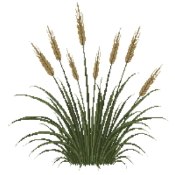

Feather Reed Grass
Calamagrostis x acutiflora 'Karl Foerster'

Feather Reed Grass is a grass for focal point, structure, suited to full sun and clay, loam or sandy soil, flowering Jun, Jul, Aug.
| Type | Grass |
|---|---|
| Mature height | 150 cm |
| Spread | 60 cm |
| Aspect | full sun |
| Foliage | Deciduous |
| Hardiness | USDA 5a-9a, RHS H7 |
| Pollinator-friendly | No |
| Pet-safe | Yes |
Where to use it in a border
At around 150 cm, it sits best toward the back of a border, or on its own as a focal point with room around it. Give it about 60 cm of room to spread. It is hardy across USDA zones 5a to 9a and rated H7 by the RHS, so check it suits your area before planting.
It appears in our lists of full sun, clay soil, sandy soil, pet-safe plants.
Flowering through the year
Good companions
Plants that share its conditions and style, chosen to complement its place in the border:
- Allium 'Purple Sensation'to edge in front
- Annual Vincato edge in front
- Autumn Moor Grassto edge in front
- Chinese Holly 'Carissa'to edge in front
- Chinese plumbagoto edge in front
- David Viburnumto edge in front
Garden styles
See Feather Reed Grass set in a full border, with spacing and companions worked out for your own conditions, in Border Builder.
Sources
Bloom timing and hardiness drawn from:
- MoBot Plant Finder (missouribotanicalgarden.org, 2026-05)
- UMN Extension (extension.umn.edu, 2026-05)
- NC State Extension (plants.ces.ncsu.edu, 2026-05)
- RHS (rhs.org.uk, 2026-05)